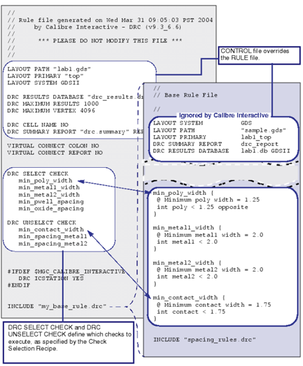

Calibre uses
the control file to define the run. The primary rule file that you
define in the Rules pane is included in the Calibre run as an Include
file in the Calibre Interactive control file. When Calibre compiles
a control file, the settings in the control file take precedence
over any corresponding settings in the rule file. In other words,
the GUI settings at the time the job is initiated control how the
job is run.
Because the rule file is included
as an Include file in the control file, current settings in the
rule file are always used each time Calibre Interactive starts a
run. However, if a GUI setting differs from a rule file setting,
the GUI setting takes precedence.
Also see the preference setting
“Automatically load rules file” in “Rules Preferences”.
Figure 1 shows a control file and a rule file
for a simple DRC run.
Figure 1. Relating Control Files to Rule
Files